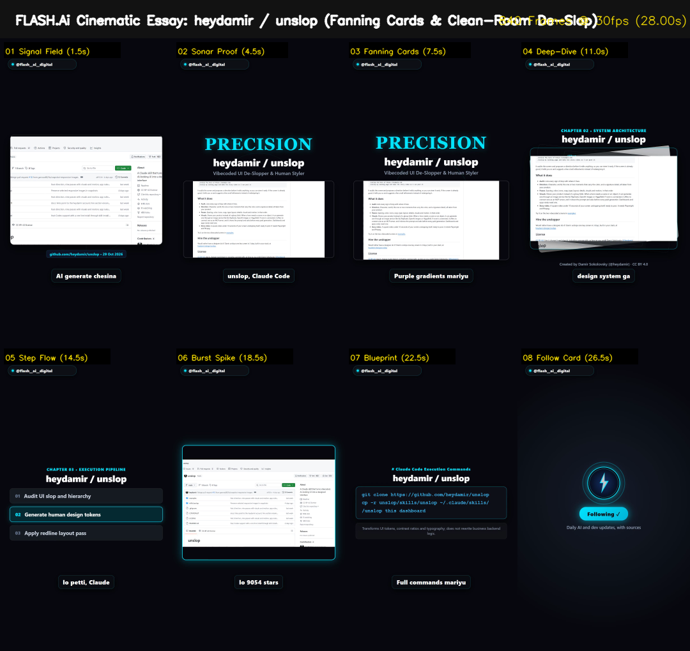

heydamir / unslop
Clean-Room Claude Skill & Design System De-Slopper
Canonical Source: https://github.com/heydamir/unslop
License & Attribution
Created by Damir Sokolovsky (@heydamir) · CC BY 4.0
Exact Commands to Run
git clone https://github.com/heydamir/unslop ~/.claude/skills/unslop
claude
/unslop --preview --strict
Grounded Evidence & Facts
- GitHub Stars: 9,054 (Verified via api.github.com/repos/heydamir/unslop)
- Created Date: 29 Oct 2026 15:41 UTC (7.0 days old)
- Core Capability: Official Claude skill that turns vibecoded, AI-looking UI into a human-designed interface
- Exact Launch Flow: Clone to ~/.claude/skills and run slash command /unslop in Claude Code session
- Skill Boundary: Transforms UI design tokens, contrast ratios and typography; does not touch backend business logic
Verified 8-Beat Visual Progression
